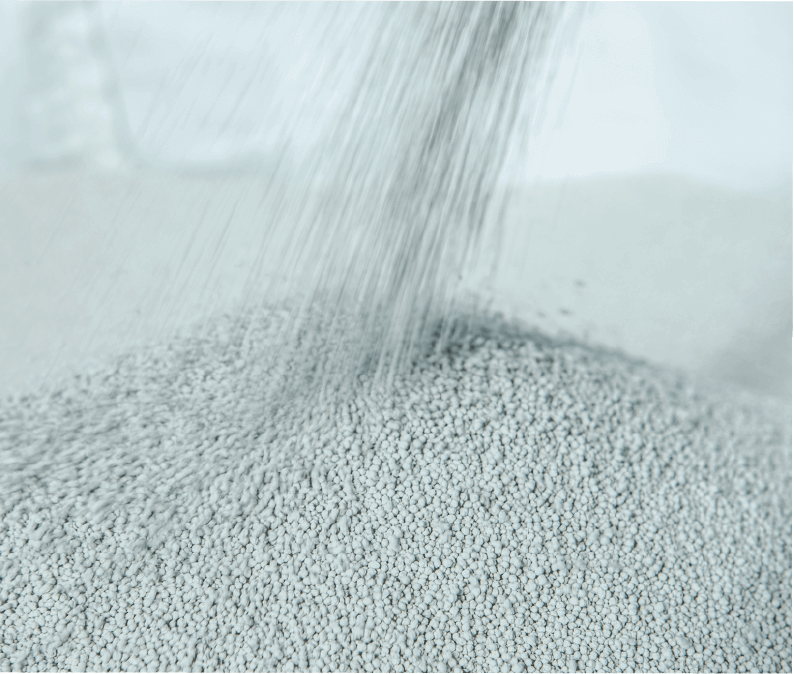

快速導覽
【Part 1】凝的疑慮
【Part 2】最新活動
【Part 3】品質保證
【Part 4】購前須知
【Part 5】名人推薦
顧客 stu sis
請問你們的貓砂會不會像饒舌圈一樣，凝結力不高？
wassup
您這個問題完全無須擔心，數字會說話!經過多次測試 3 秒迅速凝結！挖砂貓砂絕對是"凝"最好的選擇～
顧客 stu sis
那粉塵呢？該不會本產品只有外觀精采，內容物卻慘不忍睹?
wassup
我們饒舌歌手講求的就是 real 啊！我們不敢像眾多品牌一樣聲稱貓砂達到無粉塵，因為這是不大可能的代誌，但我敢說粉塵絕對低到緊繃、低到你嫑嫑啊！
顧客 stu sis
生處在這窮極無聊的貓砂市場裡，你們除了一般的礦砂，還有哪些類型的砂可以做選擇？
wassup
我們除了一般的礦砂可以選擇之外，還有添加擁有抗菌、除臭效果的天然活性碳可以選擇。
啊！
另外，我們還有將松木粉高溫高壓，壓合而成的松木砂，吸水力甭多說、迅速吸水膨脹分解，非常節省用量，CP 值也是挺高的！
顧客 stu sis
哦，這麼說好了，假設我選擇了沒有添加擁有除臭效果的活性碳，那豈不是會有很大的異味嗎?
wassup
我懂，身為一位質感青年，家裡怎能有便便、尿尿味呢？選擇了無添加活性碳的一般礦砂，也請不用擔心，我們有提供四種天然濃縮精油香砂讓您選擇，分別是海洋玫瑰、青頻果、寶寶香、薰衣草。
2017 砂石大亨 音樂 x 貓砂
當眾多音樂人在尋找副業的同時，我們當然也沒閒著，身處在滿滿文青咖啡廳以及潮流服飾的創業洪流裡，唯獨找到砂石產業的我們，決定像挖寶般的殺出一條路。2017 砂石大亨 wassup

2017 砂石大亨 掏金抽新台幣
挖砂貓砂開賣首次優惠活動來囉！2017砂石大亨 wassup 即日起，訂購一箱以上(含一箱)將有機會隨機挖到千元或百元新台幣
1
純天然優質土，就算你窮到吃土也充滿正能量 (不要真的吃阿)

more
2
99%低粉塵，比你表哥速霸陸的底盤還要低
more
3
社會在走，抗菌要有，外加除臭功效，讓你家貓咪出來走跳，也充滿自信
more
4
超高凝結力，讓我們超凝結
more
PRE-PURCHASE
NOTICE
購前須知 - 貨運
1. 使用貨運物流公司配送，會註明請貨運司機配送到買家著名的樓層，但是貨運公司是賣家的協力配合廠商，貨運司機的配送時、配合搬運態度，賣家也很難控制，只能盡量要求貨運公司加強管理配合並電聯送達指定樓層（如果有少部分司機只搬運到管理室代收，敬請買家幫忙自行拖進電梯，可以接受的再下標）。
2. 商品每週一三五下午兩點前出貨，約 3 日內可到貨，（如未到貨請聯繫賣家追蹤）工廠六日休息不出貨。
3. 本賣場請新航、新竹貨運配合配送，從工廠出貨到買家，或經過多次搬運，請事先告知送貨在家時段，如多次搬運導致箱子外觀破損貓砂袋破袋，敬請諒解並告知我們。